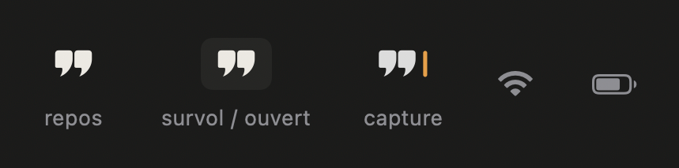
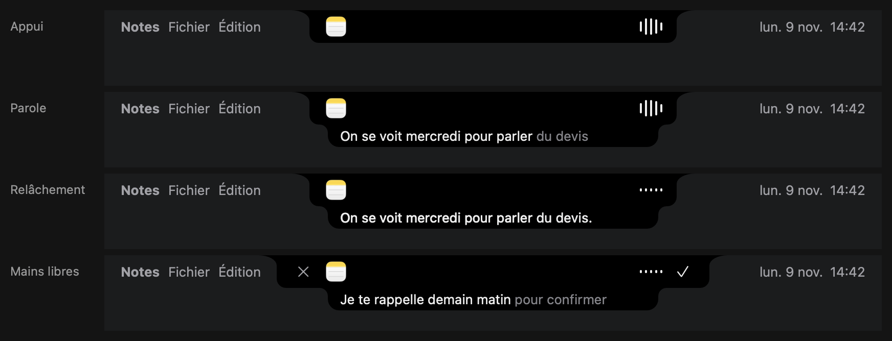
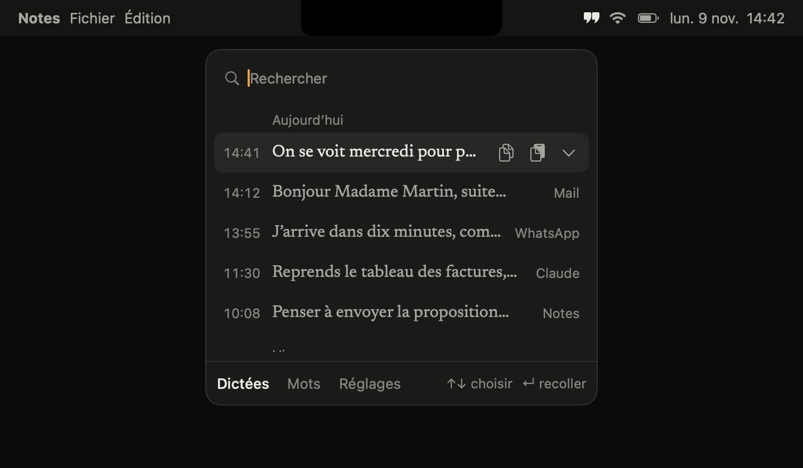
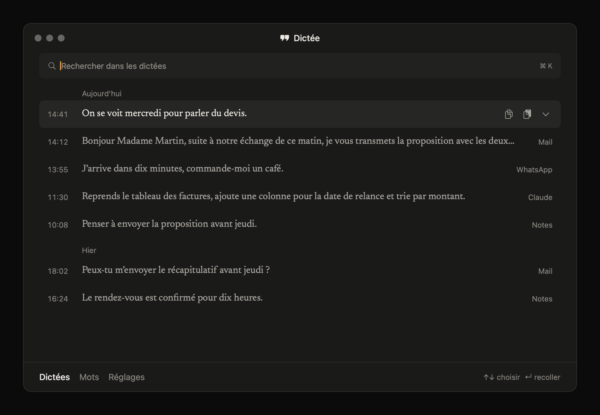
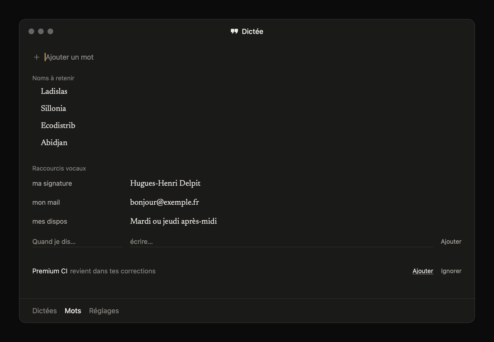
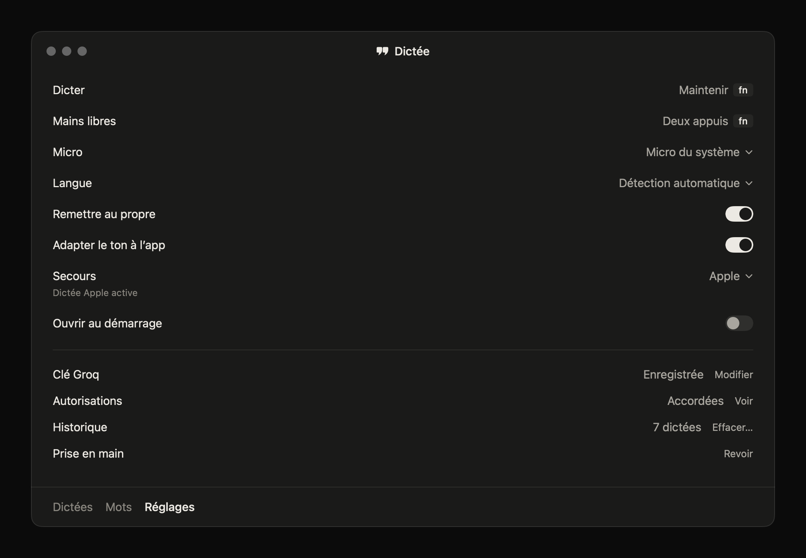
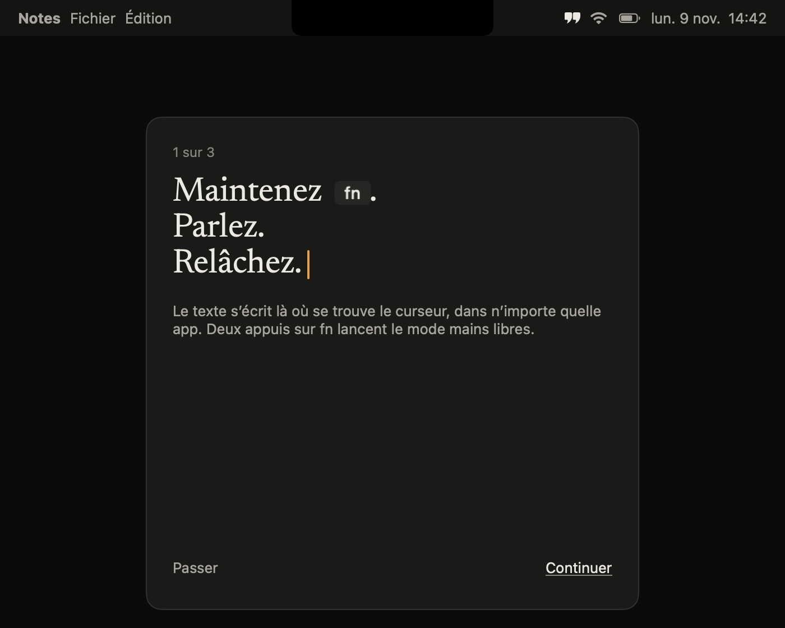

Icône de l'app
Barre des menus

L'encoche : appui, parole, relâchement, mains libres

Panneau compact (clic sur les guillemets)

Fenêtre : Dictées

Fenêtre : Mots

Fenêtre : Réglages

Premier lancement
